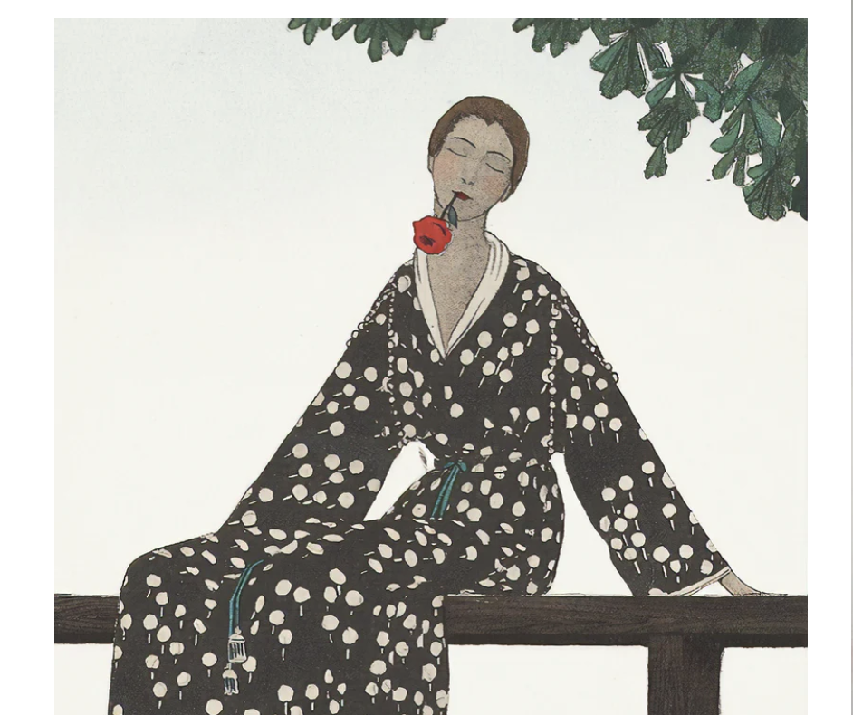
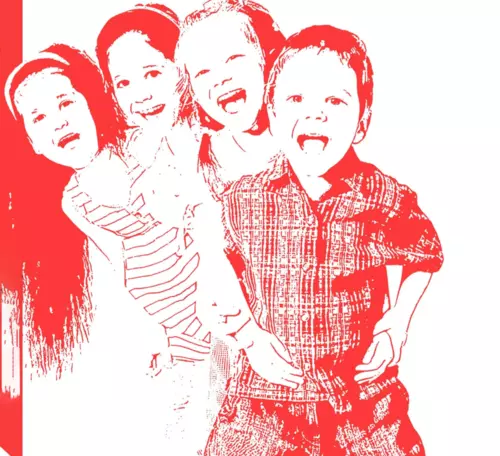

Blending the bizarre with the phantasmal, stitching together a beautifully meta-fiction to observe the poetics of ordinary.
Absurdity is my method of thinking through the ordinary. Exhagerating and looking at the para-functionalities of objetcs, cultures, people and surroundings in general, allows one to look beyond what has been hypernormalised. Here are a list of Absurdities presented as Micro-Articles that present one idea in its purest form. These micro-articles serve as a sapling for a project that when worked up will become a grown up tree with brances spreading across in different domains, while still rooted in the basics of these absurd yet simple thoughts.

